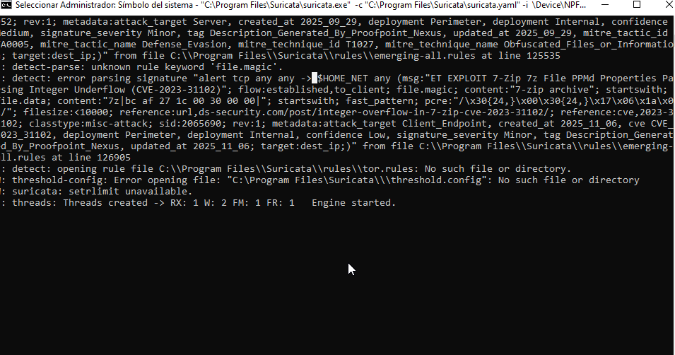
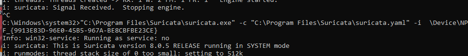

En esta quinta entrada de la serie Bluebox se cierra el ciclo completo de detección: tras desplegar el SIEM Wazuh y conectar agentes, llega el momento de provocar un evento sobre la infraestructura para validar que las alertas se generan correctamente. Se lanza un ping ICMP desde la red hacia la VM Windows donde corre Suricata como IDS, y se documenta el incidente siguiendo una plantilla formal, simulando el trabajo diario de un analista Blue Team.
Durante esta misión estuve varias horas probando combinaciones de reglas personalizadas, decodificadores y directivas en /var/ossec/etc/ossec.conf para conseguir que Wazuh registrara algo más específico que la telemetría genérica del agente. Tras mucho ensayo y error, recurrí al tutorial de este vídeo de YouTube, cuyo enfoque sobre la integración de Suricata con Wazuh y el uso de las reglas ruleset del IDS me permitió finalmente afinar la detección y obtener las alertas que se muestran a continuación.
1. Preparación del evento
El escenario es el siguiente: la VM Ubuntu Server (192.168.10.210) ejecuta Wazuh como servidor central, y la VM Windows 10 LTSC —registrada como agente con el nombre Junko_Enoshima y id 003 en 192.168.10.45— corre Suricata como IDS local, reenviando sus alertas eve.json al manager de Wazuh. La acción consistió en lanzar un ping ICMP desde la red hacia la máquina Windows para validar que Suricata registraba el evento y que Wazuh lo correlacionaba correctamente.

El comando ejecutado fue un simple ping desde una máquina del segmento de monitorización:
ping 192.168.10.45A priori, un ping parece inofensivo, pero en realidad es una de las técnicas clásicas de reconocimiento activo: permite confirmar que un host está vivo antes de lanzar un escaneo más agresivo. Por eso las reglas de Suricata (incluso las de severidad baja) lo registran: cualquier ICMP request entrante en una máquina monitorizada es señal, no ruido.
2. Verificación de las alertas en Wazuh
Con el ping en curso, accedí al dashboard de Wazuh para comprobar que las alertas se estaban generando. Esta es la parte crítica del ejercicio: si un SOC no detecta un ping ICMP básico, tampoco detectará nada más sofisticado.

La alerta apareció en el módulo Security events con la severidad indicada por Suricata, agrupada en una ventana temporal coherente con el momento del ping. A continuación se muestra el JSON tal y como lo devolvió el motor de búsqueda de Wazuh.
Alerta: ICMP PING detectado por Suricata
La alerta la dispara la regla de Wazuh 86601 (Suricata: Alert - GPL ICMP PING BayRS Router, severidad 3, grupo ids), que es la regla que Wazuh aplica a las alertas generadas por Suricata. La firma concreta de Suricata es la 2100369 (GPL ICMP PING BayRS Router), que identifica el tráfico ICMP tipo 8 (echo request) —el clásico ping. Suricata la clasifica con severidad 3 e impacto Informational. Lo interesante de esta alerta es el flow: 123 paquetes hacia el servidor y 122 hacia el cliente, durante los casi 4 minutos que duró el flujo (2026-06-19T14:30:10 → 14:34:11), lo que indica que no fue un único ping suelto, sino un intercambio sostenido. La regla de Wazuh se disparó 123 veces (firedtimes), una por cada evento eve.json que Suricata generó durante ese flujo.
3. Informe de Incidente #001
Con las alertas confirmadas, procedí a redactar el informe de incidente siguiendo la plantilla de Blue Team. Este es exactamente el tipo de documento que se enseña en entrevistas de trabajo y que se entrega al equipo de respuesta ante incidentes tras un evento real.
Informe de Incidente #001
ping (origen) · Suricata IDS + Wazuh SIEM (detección)eve.json de Suricata a través del agente, generó 123 alertas (firedtimes) a partir de la regla 86601. El evento se clasifica como reconocimiento activo: confirmación de host vivo previa a un posible escaneo o ataque.Firma Suricata 2100369 — GPL ICMP PING BayRS Router — Categoría: Misc activity — Acción: allowed
Protocolo: ICMP (tipo 8, código 0) — IPv4
Flujo: flow_id 753881661922225 · src 192.168.10.210 → dst 192.168.10.45 · 123 pkts toserver / 122 pkts toclient
Origen del log:
C:\Program Files\Suricata\log\eve.json
2. Regla de correlación personalizada en Wazuh que eleve la severidad cuando una IP genere más de X alertas ICMP en una ventana corta, descartando falsos positivos administrativos.
3. Segmentar la red de monitorización mediante VLAN o firewall para que el servidor Wazuh no comparta segmento con los endpoints monitorizados, reduciendo superficie de ataque lateral.
4. Desactivar respuestas ICMP en los endpoints de producción que no requieran responder a pings (Windows Firewall: bloquear eco entrante en perfil público y dominio).
5. Mantener Suricata actualizado y revisar periódicamente las reglas GPL para asegurar que las firmas de reconocimiento siguen activas.
6. Documentar pruebas en un runbook para que futuras validaciones del IDS queden registradas y no se confundan con tráfico malicioso real.
4. Resumen de la misión
- Evento: Ping ICMP desde 192.168.10.210 hacia 192.168.10.45 (4 min, 123/122 paquetes)
- Detección: Suricata firma 2100369 → Wazuh regla 86601 (severidad 3, firedtimes 123)
- Cadena validada: Suricata IDS →
eve.json→ agente Wazuh → manager → dashboard - Agente emisor: Junko_Enoshima (id 003) en 192.168.10.45
- Informe: Documentado siguiendo plantilla formal de Blue Team
- Aprendizaje clave: Un ping ICMP no es ruido, es reconocimiento activo — y la cadena de detección funciona
Con esta misión queda demostrado el ciclo completo: despliegue del SIEM → conexión de agentes → integración del IDS → detección de eventos → redacción de informes. El siguiente paso natural es aumentar la sofisticación de los eventos simulados (escaneos Nmap, explotación de SMB, movimiento lateral, exfiltración) para poner a prueba las reglas de correlación de Wazuh en escenarios más avanzados.